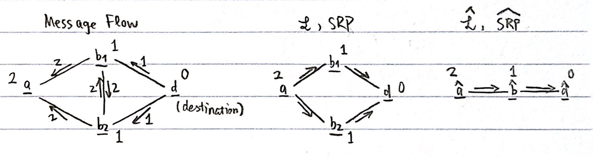
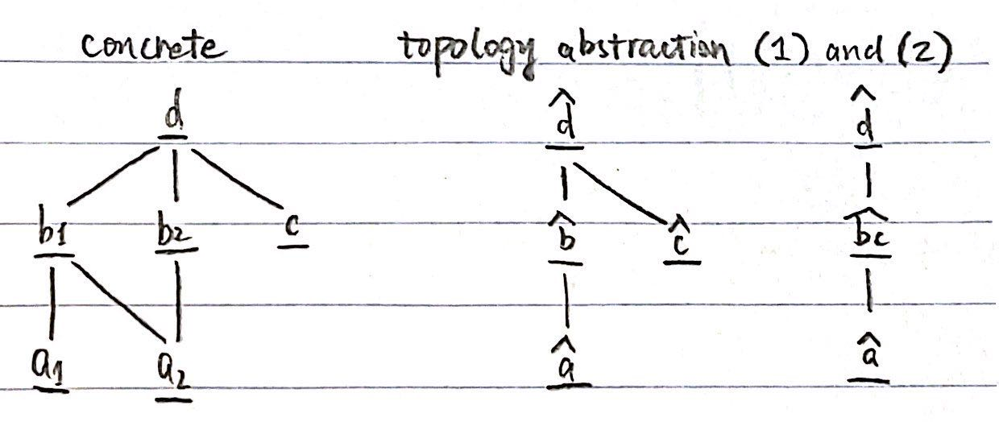

Home / Blogs / Computer Networking / Control Plane Compression I
Control Plane Compression I
Table of Contents
Hi, here I'm going to share my reading and thoughts of the paper Control Plane Compression.[1] Since this is a long technical report involving many models, theorems, and algorithms, I will break it down into two parts and discuss only the first part in this post.
Introduction
Configuration errors can cause network outages and security breaches, of which the root cause is the complexity of the networks. In this paper, the authors develop a new theory of control plane equivalence and use it to compress large concrete networks to smaller abstract networks with equivalent behavior.
Stable Routing Problem (SRP)
We view routers as the nodes, links as the edges, and messages as the attributes. Different routing protocols can have different attributes. For instance, RIP uses destination prefix and hop count, while BGP uses destination prefix, local preference, and other optional data. We will discuss how the authors model different routing protocols later. In addition to the above, there must also exist a comparison relation (so as to prefer certain attributes over the others), and a transfer function (which transferes incoming messages to outgoing messages).
From the observations above, we define an SRP instance $SRP=(G,A,a_d,\prec,\texttt{trans})$ which has the following components:
- A directed graph defining topology with a specified destination: $G=(V,E,d)$, where $V$ represents the nodes, $E\in V\times V$ represents the edges, and $d\in V$ represents the destination.
- A set of attributes: $A$, with the special attribute $\perp$ representing the absense of an attribute (routing message) and $A_{\perp}=A\cup\{\perp\}$.
- The initial protocol message advertised by the specified destination: $a_d\in A_{\perp}$.
- An attribute comparison relation: $a_1\prec a_2$ means that $a_1$ is more desirable.
- An attribute transfer function: $\texttt{trans}:E\times A_{\perp}\to A_{\perp}$, which, based on the edge and the attribute of the neighbor, describes how attributes will be modified.
Some of the routing protocols including RIP, OSPF, and static routing are modeled as in Appedix A.
SRP Solution
An SRP solution $\mathcal{L}:V\to A$ associates an attribute with each node, which represents the route chosen by the node to the destination. An important property of an SRP solution is that, each node is not offered an attribute by a neighbor that is preferred more than the chosen one. An SRP solution also implicitly defines the forwarding behavior. If $a$ receives its chosen attribute from $b$, then $a$ will forward traffic to $b$. Note that each SRP solution is derived from a set of constraints that requires each node to be locally stable. Moreover, an SRP instance can have multiple solutions.
Before formulating an SRP solution, we introduce some helpful notations:
-
$\texttt{choices}_{\mathcal{L}}(u)=\{(e,a);\;e=(u,v),a=\texttt{trans}(u,\mathcal{L}(v)),a\neq\perp\}$.
For a fixed node $u$, choose an adjacent edge $e$, then determine the new attribute $a$ for $u$ via the transfer function. There can be a choice for each adjacent edge (i.e., for each neighbor), but $\perp$ is not considered a choice.
-
$\texttt{attrs}_{\mathcal{L}}(u)=\{a;\;(e,a)\in\texttt{choices}_{\mathcal{L}}(u)\}$.
For a fixed node $u$, extract the potential choices of attributes.
-
$\texttt{fwd}_{\mathcal{L}}(u)=\{e;(e,a)\in\texttt{choices}_{\mathcal{L}}(u),a\approx\mathcal{L}(u)\}$, where two attributes $a_1\approx a_2$ if and only if $a_1\not\prec a_2$ and $a_2\not\prec a_1$.
For a fixed node $u$, extract the set of edges such that the attribute learned from $e$ is equal to be best choice $\mathcal{L}(u)$ at $u$. The attribute does not need to be exactly $\mathcal{L}(u)$, but at least as good. If there is more than one such edge, then a node may forward to multiple neighbors.
Now, we can formulate the SRP solution as follows: $$ \mathcal{L}(u)= \begin{cases} a_d, & \text{if $u=d$}, \\ \perp, & \text{if $\texttt{attrs}_{\mathcal{L}}(u)=\emptyset$}, \\ \text{$a\in\texttt{attrs}_{\mathcal{L}}(u)$ that is minimal by $\prec$}, & \text{otherwise}. \end{cases} $$
Network Abstractions
A network abstraction from the concrete network $SRP$ to the abstract network $\widehat{SRP}$ is defined by a pair of functions $(f,h)$, such that $f:V\to\widehat{V}$ is the topology abstraction function, and $g:A\to\widehat{A}$ is the attribute abstraction function.
We say that $SRP$ and $\widehat{SRP}$ are control plane equivalent (CP-equivalent) when:
There is a solution $\mathcal{L}$ to $SRP$ if and only if there is a solution $\widehat{\mathcal{L}}$ to $\widehat{SRP}$, where (1) routers are labeled with similar attributes, as defined by the attribute abstraction $h$, and (2) packets are forwarded similarly, as defined by the topology abstraction $f$.
More formally, we require for CP-equivalence that:
-
Label-equivalence:
$\forall u:h(\mathcal{L}(u))=\widehat{\mathcal{L}}(f(u))$.
For each solution $\mathcal{L}$ to $SRP$, there exists a corresponding solution $\widehat{\mathcal{L}}$ to $\widehat{SRP}$. That is, whenever $\mathcal{L}$ labels $u$ with $a$, $\widehat{\mathcal{L}}$ labels $f(u)$ with $h(a)$, and vice versa.
-
Forwarding-equivalence:
$\forall(u,v)\in\texttt{fwd}_{\mathcal{L}}(u):(f(u),f(v))\in\widehat{\texttt{fwd}}_{\widehat{\mathcal{L}}}(\widehat{u})$.
Given related labellings, the final control plane behaviors are related, in the sense that they are equivalent with respect to forwarding.
An example can be as follows:

Effective Abstractions
We want to achieve CP-equivalence for the abstract network, but it is impossible to simulate the behavior of $SRP$ and $\widehat{SRP}$ on all possible inputs. Instead, the authors formulate some conditions that are sufficient to guarantee CP-equivalence while being easier to evaluate efficiently. The network abstractions that satisfy these conditions are called effective abstractions.
Topology Abstraction Conditions
An effective abstraction must satisfy the following conditions related to topology abstraction:
-
Destination-equivalence:
$f(d)=\widehat{d}$, and $\forall d'\neq d:f(d')\neq\widehat{d}$.
The concrete destination, and only the concrete destination, should be mapped to the abstract destination.
-
$\forall\exists$-abstraction:
$$
\begin{align*}
& \forall(u,v)\in E:(\widehat{u},\widehat{v})\in\widehat{E}, \\
& \forall(\widehat{u},\widehat{v})\in\widehat{E}:\forall u\;\;\text{s.t. }f(u)=\widehat{u}:\exists v\;\;\text{s.t. }f(v)=\widehat{v}\text{ and }(u,v)\in E.
\end{align*}
$$
For every concrete edge, the corresponding abstract nodes mapped from its endpoints must be connected. Moroever, for every abstract edge and for every concrete node mapped to one of its endpoints, there must be some concrete node mapped to its other endpoint such that they are connected.
An example can be as follows:

Attribute Abstraction Conditions
An effective abstraction must satisfy the following conditions related to attribute abstraction:
- Original-equivalence: $h(a_d)=\widehat{a_d}$.
- Drop-equivalence: $\forall a:a=\perp\iff h(a)=\perp$.
-
Rank-equivalence: $\forall a,b:a\prec b\iff h(a)\,\widehat{\prec}\,h(b)$.
The abstraction must preserve the attribute ordering of the comparison relation.
-
Transform-equivalence: $\forall e,a:h(\texttt{trans}(e,a))=\widehat{\texttt{trans}}(f(e),h(a))$.
Applying the concrete transfer function first and then abstracting the resulting attributes should be equivalent to abstracting the attributes first and then applying the abstract transfer function.
References
- Ryan Beckett, Aarti Gupta, Ratul Mahajan, and David Walker. 2018. Control Plane Compression. In Proceedings of the 2018 Conference of the ACM Special Interest Group on Data Communication. ACM, Budapest Hungary, 476-489. https://doi.org/10.1145/3230543.3230583
Appendix
A Common Routing Protocols
Routing Information Protocol (RIP): RIP uses shortest paths (based on hop counts) as its routing metric. It can be modeled as follows:
-
$A=\{0,\cdots,15\}$, and $a_d=0$.
RIP supports a maximum path length of 16.
- $\prec$: prefers shorter paths (based on hop counts).
- $\texttt{trans}$: drops a route if it exceeds the hop count limit, and otherwise increment the path length.
Open Shortest Path First (OSPF): OSPF allows routers to exchaneg link cost information and compute the least-cost path to the destination. Moreover, large OSPF networks can be split into multiple areas and may prefer intra-area routes over inter-area routes. Note that the priority of intra/inter is higher than path cost. OSPF can thus be modeled as follows:
-
$A=\{0,1\}\times\mathbb{N}$, and $a_d=(1,0)$.
Each attribute is a tuple. In the first entry, 1 stands for intra-area and 0 stands for inter-area. The second entry represents path cost.
- $\prec$: prefers intra-area routes over inter-area routes, then prefer lower costs.
- $\texttt{trans}$: changes the first entry from 1 to 0 when crossing an intra-area edge, adds the (configured) link cost to the second entry.
Static Routing: Operators can configure static routes that describe which interface to use for the given destination. It can be modeled as follows:
-
$A=\{1\}$, and $a_d=\perp$.
This indicates the presence of a static route. Otherwise, $a=\perp$.
- $\prec$: trivially empty because $A$ is a singleton.
- $\texttt{trans}$: returns 1 if there is a static route configured locally along an edge, and $\perp$ otherwise.